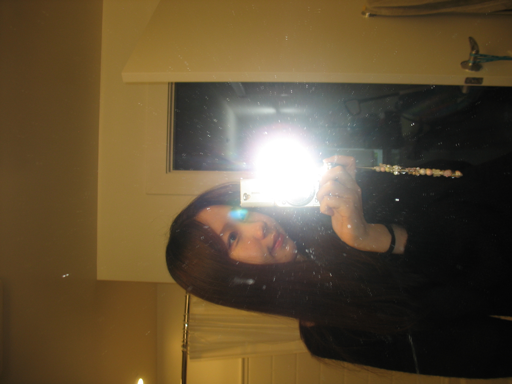
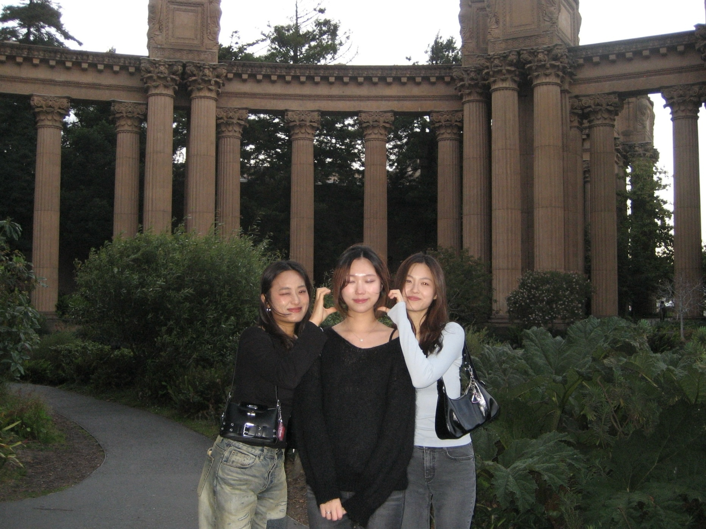

A little bit about me... 👋
My design approach is guided by curiosity, strategy, and an interest in how products create value for both people and businesses. I believe effective design starts with understanding the human and organizational context. Whether it’s shaping a product strategy or improving an existing experience, I aim to create solutions that are scalable and intentional.
Growing up spending hours and hours tinkering around in Photoshop, I fell in love with the process of creation: experimenting both inside and outside the box, iterating and iterating, and discovering how small details could completely change how something feels. Over time, that same fascination grew into a deeper desire to understand why people respond to design the way they do, and how design can shape meaningful, lasting experiences.
Now, as I finish my master’s degree in Information Experience Design, I’m continuing to deepen my technical and creative practice. As I get started in my career, I excited to keep designing for products that help people navigate complexity with clarity. Outside of design, you can find me catching Pokemon, designing posters on Photoshop, spending time with my family, and going to happy hour with friends :)
Recent Experiences
UX Consultant
Pratt DX Center
Spring 2025 - Present
Product Design Intern
Lyft
Summer 2025
UX Design Fellow
NYC DCP
Summer 2024
Teaching Assistant
CMU Tepper
Spring 2023
Education
M.S. in Information Experience Design
Pratt Institute
Fall 2024 - Present
B.S. in HCI and Business Adminstration
Carnegie Mellon University
Fall 2019 - May 2023
01. Me!
02. Summer @ the bay
03. Tartan Days
04. Hammer 🔨